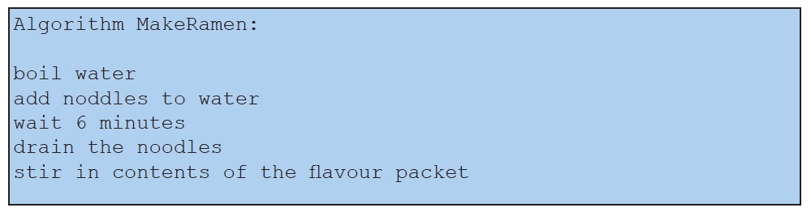

Abstraction is the process of strategically removing details that are not relevant concerning a particular goal. Abstraction, like the algorithms, can be found everywhere, not just in computer science. A building floor plan is an abstraction: it includes elements relevant to the purpose of helping people navigate the building. It omits details such as the construction materials and the location of wires and plumbing. In computer science, the ability to write an algorithm at different levels of abstraction is a crucial skill. To illustrate this concept, let’s look again at our MakeRamen algorithm from earlier in the chapter.

The first action in this pseudocode algorithm is “boil water”. Boiling water is an excellent example of abstraction because the action, “boil water”, glosses over all of the details of how to boil water. For humans, these details are pretty unimportant, because almost all adult humans know how to boil water. But imagine that this algorithm has to be carried out by a humanoid cooking robot. The robot does not intuitively know how to boil water. The action, “boil water”, is too abstract for it, so it needs more details.